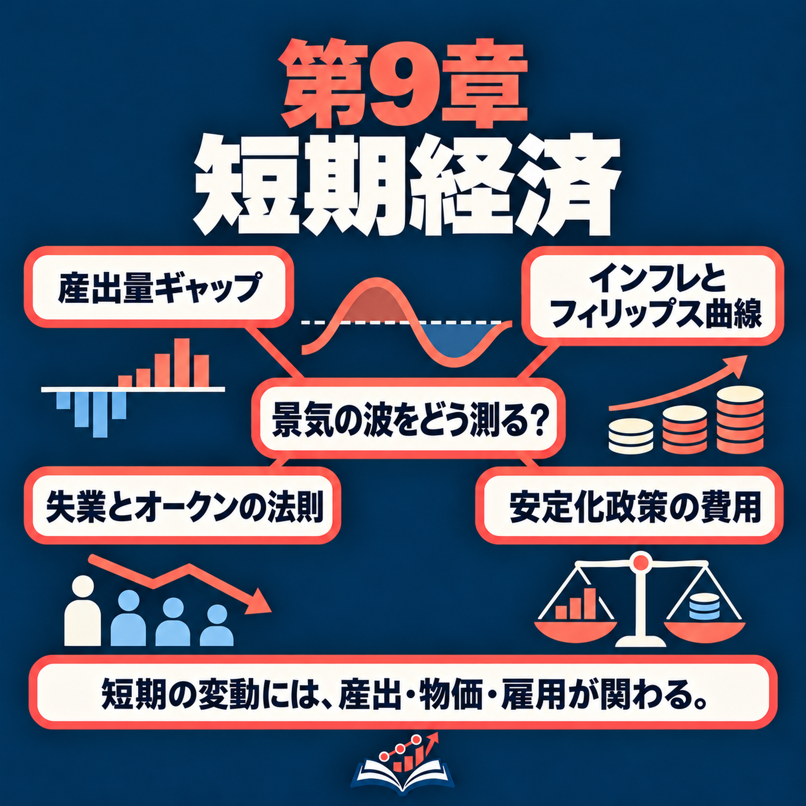

司会者14秒ch09-t001
Welcome back. Today we are on the short run: the booms and slumps of an economy, and what they do to prices and jobs. Let's start with one month.
今回もお聞きいただき、ありがとうございます。今日は短期、つまり経済の好況と不況、それらが物価や雇用に与える影響を扱います。まず、ある1か月を見てみましょう。
Carlos Mendez · 日本語レッスン · Chapter 9
この課では、好況と不況をどう測るか、そして好況や不況がインフレ率と失業率にどう影響するかを日本語で聞きます。フィリップス曲線とオークンの法則を説明する表現をシャドーイングで身につけ、最後に同じ内容をN1レベルの書き言葉で読み、自分の言葉で説明します。
Hear how booms and slumps are measured and what they do to inflation and unemployment, shadow the language of the Phillips curve and Okun's law, then read the same ideas in N1-level written Japanese and explain them yourself.
まず語彙を確認してから音声を聞きましょう。カードをめくって、意味が言えたら「覚えた」を押します。Preview the words first. Flip each card; mark it once you can recall the meaning.
覚えた語：0 / 30
| 語句・読み | レベル | English | 本文の例 | |
|---|---|---|---|---|
| 好況こうきょう | N1推定 | boom (good times) | 今日は短期、つまり経済の好況と不況、それらが物価や雇用に与える影響を扱います。 | ✓ |
| 不況ふきょう | N2推定 | slump; recession | 今日は短期、つまり経済の好況と不況、それらが物価や雇用に与える影響を扱います。 | ✓ |
| 景気循環けいきじゅんかん | 超N1推定 | business cycle | 第1部では景気循環、つまり好況と不況の繰り返す上下動を測ります。 | ✓ |
| 上下動じょうげどう | N1推定 | ups and downs; up-and-down movement | 第1部では景気循環、つまり好況と不況の繰り返す上下動を測ります。 | ✓ |
| 巡航速度じゅんこうそくど | 超N1推定 | cruising speed | 車の巡航速度を考えてください。 | ✓ |
| 急騰きゅうとう | N1推定 | sudden jump (in prices) | アイランディアなら、輸入燃料の価格急騰、嵐、あるいは貿易相手であるメインランドの不況などです。 | ✓ |
| 先延ばしさきのばし | N1推定 | putting off; postponement | 島の造船業者であるハーバー造船所は残業のシフトを組み、修理を先延ばしにします。 | ✓ |
| 産出量ギャップさんしゅつりょうギャップ | 超N1推定 | output gap | これが短期の産出量、または産出量ギャップです。 | ✓ |
| 推計すいけい | N1推定 | estimate; estimation | その時代の潜在産出量を推計した機関はなかったので、初期のギャップはデータに滑らかな傾向線を当てはめて求めています。 | ✓ |
| 改定かいてい | N1推定 | revision (of figures or rules) | 統計機関は、総産出量の指標であるGDPを改定します。 | ✓ |
| 指標しひょう | N1推定 | indicator; measure | 統計機関は、総産出量の指標であるGDPを改定します。 | ✓ |
| 観測かんそく | N2推定 | observation | また、潜在産出量は観測できません。 | ✓ |
| 傾きかたむき | N2推定 | slope | その方程式は、前年から今年へのインフレ率の変化が、傾き掛ける短期の産出量に等しいと示します。 | ✓ |
| 値上げ幅ねあげはば | N1推定 | size of a price increase | 企業は皆が予想するより値上げ幅を小さくするので、インフレ率が下がります。 | ✓ |
| 思考実験しこうじっけん | 超N1推定 | thought experiment | これは思考実験です。 | ✓ |
| 積み上げつみあげ | N1推定 | build-up; running total | つまり、インフレ率は積み上げの合計のようなものですね。 | ✓ |
| 総和そうわ | 超N1推定 | sum total | 積み上げの合計とは、足し続けていく総和です。 | ✓ |
| 負担ふたん | N2推定 | burden; to bear (a cost) | アイランディアは、どうやってそれを負担できますか。 | ✓ |
| 総量そうりょう | N1推定 | total amount | 政策で決められるのは痛みをどう分散するかで、痛みの総量ではありません。 | ✓ |
| 連邦準備制度理事会れんぽうじゅんびせいどりじかい | 超N1推定 | Federal Reserve Board (the Fed) | 1979年、連邦準備制度理事会を率いていたポール・ボルカーです。 | ✓ |
| 借り入れかりいれ | N1推定 | borrowing | 借り入れが高くつくようになり、企業も家計も支出を減らしました。 | ✓ |
| 焦点しょうてん | N2推定 | focus; central point | 議論の焦点は、どれほど速く下げるか、そして誰が負担するかです。 | ✓ |
| 自然失業率しぜんしつぎょうりつ | 超N1推定 | natural rate of unemployment | まず、自然失業率とは長期的に経済が落ち着く失業率です。 | ✓ |
| ばらつきばらつき | N1推定 | dispersion; scatter | ばらつきの大きいフィリップス曲線の点と比べてです。 | ✓ |
| 右下がりみぎさがり | N1推定 | downward-sloping | 点は傾きマイナス0.62の右下がりの線の近くに並びます。 | ✓ |
| 縮小しゅくしょう | N2推定 | shrinking; contraction | 不況とは、産出量が縮小したかどうかではなく、ギャップについての話です。 | ✓ |
| 連鎖れんさ | N1推定 | chain (of effects) | 次は、金利から産出量、そしてインフレ率と失業率につながる連鎖です。 | ✓ |
| 手掛かりてがかり | N1推定 | clue; guide | そして政策は、誰も直接見ることのできないギャップを手掛かりにしなければなりません。 | ✓ |
| 小幅こはば | N1推定 | small (margin of change) | 下げるには不況が必要で、企業が予想より小幅な値上げにするようにします。 | ✓ |
| 破綻はたん | N1推定 | collapse; failure | 住宅価格の下落が銀行を破綻の危機へ追い込んだ仕組みと、パンデミックの不況がどう違ったかを考えます。 | ✓ |
レベルは日本語能力試験の公式リストではなく、推定です。JLPT levels are estimates; there is no official list.
まず一度、本文を見ずに最後まで聞きます。分からない所があっても止めずに、全体の流れをつかみましょう。Listen once without the text to get the overall flow; don't stop for gaps.

▶で1つの発言を再生します。再生中はボタンが■に変わり、もう一度押すと止まります。⟲でくり返し再生します。「自動ポーズ」をオンにすると、発言のあとに同じ長さの間が入り、その間に声に出して言えます。下線の語は推定N1以上の語です。▶ plays one turn and turns into ■; press it again to stop. ⟲ loops it. Auto-pause leaves a gap after each turn for you to repeat, then moves on. Underlined words are estimated N1 or above.
Welcome back. Today we are on the short run: the booms and slumps of an economy, and what they do to prices and jobs. Let's start with one month.
今回もお聞きいただき、ありがとうございます。今日は短期、つまり経済の好況と不況、それらが物価や雇用に与える影響を扱います。まず、ある1か月を見てみましょう。
April 2020. Covid-19 had just closed shops, restaurants and offices. In that single month, the United States lost 13.6 percent of all its jobs. That's more than one job in eight.
2020年4月です。新型コロナウイルスによって、店、レストラン、オフィスが閉鎖されたばかりでした。そのひと月だけで、アメリカでは雇用全体の13.6％が失われました。8人に1人を超える仕事がなくなったのです。
And the growth models we have studied say nothing about that?
これまで学んできた成長モデルでは、こうしたことは何も説明できないのですか。
Not much. They tell us where an economy is heading over decades. Today we look at the ups and downs along the way.
あまり説明できません。成長モデルは、経済が何十年かけてどこへ向かうかを教えてくれます。今日は、その道筋の途中で起こる上下の動きを見ていきます。
So here is today's question. Why does output swing around its trend, and what do booms and slumps do to inflation and jobs?
今日の問いです。産出量はなぜ長期的な傾向のまわりで変動するのでしょうか。そして好況と不況は、インフレや雇用にどんな影響を与えるのでしょうか。
By the end of this episode, you'll be able to do three things. First, describe how economists measure booms and slumps, and what U.S. recessions did to output, jobs and inflation, the rate at which prices rise. Second, explain why a boom that lasts makes inflation rise year after year, and why bringing it down takes a slump. Third, use a rule called Okun's law to work out how much unemployment a slump brings.
このエピソードを聞き終わるころには、三つのことができるようになります。第一に、経済学者が好況と不況をどう測るか、そしてアメリカの不況が産出量、雇用、物価上昇率であるインフレ率にどんな影響を与えたかを説明できます。第二に、好況が続くとなぜインフレ率が年々上がるのか、そしてそれを下げるにはなぜ不況が必要なのかを説明できます。第三に、オークンの法則と呼ばれる関係を使って、不況によって失業率がどれだけ上がるかを求められます。
And we'll follow the chapter's mind map part by part?
章のマインドマップを、項目ごとにたどるのですね。
Yes. Part one measures the cycle, meaning the repeated ups and downs of booms and slumps. Part two is the Phillips curve, and part three is Okun's law and policy. Each part has five leaves, small topics that we take in order.
はい。第1部では景気循環、つまり好況と不況の繰り返す上下動を測ります。第2部はフィリップス曲線、第3部はオークンの法則と政策です。それぞれの部には5つの枝葉があり、小さなテーマを順番に見ていきます。
Part one of the map: Measuring the cycle. The first leaf is short-run output, the percent gap from potential. So, what is potential?
マップの第1部は景気循環を測ることです。最初の項目は短期の産出量、つまり潜在産出量からのパーセント差です。潜在とは何でしょうか。
Let's visit Islandia again, our small imaginary island country. Over many years, its output climbs along a smooth path, set by its tools, its workers and its ideas. That smooth path is the trend in today's question. Economists call it potential output. It is what Islandia produces when everything is used at a pace it can keep up year after year. Think of a car's cruising speed, the speed it can hold on a long trip, not its top speed.
架空の小さな島国、アイランディアにまた戻りましょう。長い年月をかけて、道具、労働者、アイデアによって決まる滑らかな道筋に沿って、産出量が増えていきます。今日の問いにある傾向とは、その滑らかな道筋です。経済学者はこれを潜在産出量と呼びます。毎年続けられるペースで、すべてを使ったときにアイランディアが生産する量です。車の巡航速度を考えてください。長い旅で保てる速度であり、最高速度ではありません。
And actual output doesn't follow that path?
実際の産出量は、その道筋に沿わないのですか。
Not year to year. Shocks, meaning sudden events, push output away from potential. On Islandia, that could be a jump in the price of imported fuel, a storm, or a slump in Mainland, its trading partner. In a boom, output is above potential. Harbor Boatworks, the island's boat builder, runs overtime shifts and delays repairs. Its boats get hard to buy. In a slump, output is below potential, and work at its boatyards slows down.
毎年、沿うわけではありません。ショック、つまり突然の出来事によって、産出量は潜在産出量から離れます。アイランディアなら、輸入燃料の価格急騰、嵐、あるいは貿易相手であるメインランドの不況などです。好況では産出量が潜在産出量を上回ります。島の造船業者であるハーバー造船所は残業のシフトを組み、修理を先延ばしにします。船は手に入りにくくなります。不況では産出量が潜在産出量を下回り、造船所の仕事が減ります。
So how do we measure how far Islandia is from potential?
アイランディアが潜在産出量からどれだけ離れているか、どう測りますか。
Take the distance between actual and potential output, and divide it by potential output. That gives short-run output, also called the output gap. Suppose potential output is 100 units, and Islandia makes only 98. It falls short by 2 percent of potential, so short-run output is minus 2 percent. It is positive in a boom, negative in a slump, and zero at potential. We use a percent because the same shortfall of boats is a disaster for a tiny island, but almost nothing for a giant economy.
実際の産出量と潜在産出量との差を、潜在産出量で割ります。これが短期の産出量、または産出量ギャップです。潜在産出量が100単位なのに、アイランディアが98単位しか生産しないとします。潜在産出量より2％少ないので、短期の産出量はマイナス2％です。好況ではプラス、不況ではマイナスとなり、潜在産出量と等しければゼロです。同じ船の不足でも、小さな島国にとっては大問題ですが、大きな経済にとってはほとんど問題にならないので、割合を使います。
Next leaf: 1933 and 1944. What happened in those years?
次の項目は1933年と1944年です。その年に何が起きたのですか。
These are the biggest swings in the U.S. data. In 1933, during the Great Depression, a deep slump that hit the whole world, U.S. output was 23 percent below potential.
これはアメリカのデータで最も大きな変動です。世界全体を襲った深刻な不況である大恐慌の最中、1933年のアメリカの産出量は潜在産出量を23％下回りました。
Almost a quarter below. And 1944 was World War Two. I suppose output was right at potential then, since potential is the most an economy can make.
ほぼ4分の1も下回ったのですね。1944年は第二次世界大戦の最中です。潜在産出量は経済が生産できる最大量だから、実際の産出量はその水準だったのでしょうか。
That's a common misreading of the word. In 1944, output was 35 percent above potential, as factories ran day and night to make weapons. Remember, potential is a cruising speed, not a top speed. For a while, firms can run extra shifts and skip repairs, but they can't keep that up. One caution: no agency estimated potential output for those years, so these early gaps are based on a smooth trend drawn through the data. Since about 1950, the swings have been much smaller, mostly within 4 percent of potential, above or below.
その言葉をよく誤解します。1944年には、兵器を作るため工場が昼夜稼働し、産出量は潜在産出量を35％上回りました。潜在産出量は巡航速度であり、最高速度ではないことを思い出してください。企業はしばらく追加シフトを組み、修理を省くこともできますが、それを続けることはできません。一つ注意があります。その時代の潜在産出量を推計した機関はなかったので、初期のギャップはデータに滑らかな傾向線を当てはめて求めています。1950年ごろ以降、変動はずっと小さくなり、潜在産出量の上下4％以内に収まることがほとんどです。
Next leaf: 2020, in today's data and in the 2023 data. Before the numbers, what exactly is a recession?
次の項目は、現在のデータと2023年に公表されたデータにおける2020年です。数字を見る前に、不況とは正確には何でしょうか。
A recession begins when output falls below potential, so when short-run output turns negative. In recent decades, the deepest dip came in the spring of 2020, when Covid-19 closed much of the economy.
産出量が潜在産出量を下回り、短期の産出量がマイナスになると、不況が始まります。近年で最も深い落ち込みは、2020年春、新型コロナウイルスによって経済の大部分が閉鎖されたときに起こりました。
How deep was it?
どれほど深かったのでしょうか。
In today's data, output fell 8.8 percent below potential. But in the data published in 2023, the same dip was 10.4 percent.
現在のデータでは、産出量は潜在産出量を8.8％下回りました。しかし2023年に公表されたデータでは、同じ落ち込みが10.4％でした。
Wait, the past changed?
待ってください。過去が変わったのですか。
The past didn't change, but what we know about it did. Statistical offices revise GDP, their measure of total output. That means they correct and update it as better information arrives. And potential output is never observed. It is estimated with a model, and every new estimate moves the gap. So when you quote a gap, say in which year the data were published.
過去は変わっていませんが、過去について分かっていることが変わりました。統計機関は、総産出量の指標であるGDPを改定します。よりよい情報が得られるたびに、修正して更新するということです。また、潜在産出量は観測できません。モデルで推計するため、新しい推計が出るたびにギャップも変わります。ですから、ギャップを引用するときは、データが何年に公表されたものかも示してください。
Next leaf: the Covid-19 recession and the jobs it cost. How many?
次の項目は、新型コロナウイルスの不況で失われた仕事の数です。いくつですか。
21.9 million jobs, in about two months. That's the total for the whole United States, from the peak in February to the low point in April.
約2か月で2,190万人分の雇用です。2月のピークから4月の底までの、アメリカ全体の合計です。
Is that a lot, compared with other recessions?
ほかの不況と比べて多いのでしょうか。
Far more. In most U.S. recessions since 1980, the country lost between 1 and 3 million jobs. So this one cost more than seven times as many.
はるかに多いです。1980年以降のアメリカの大半の不況では、失われた仕事は100万〜300万人分の雇用でした。今回はその7倍を超える仕事が失われました。
Last leaf of this part: inflation. What happens to it in a recession? I'd guess it goes up. Times are hard, and everything feels expensive.
この部の最後はインフレです。不況ではどうなるのでしょうか。景気が悪く、何もかも高く感じるので、上がると思います。
The data say the opposite. Since 1960, inflation has usually peaked close to the start of a recession, and then fallen during it. That's this leaf: inflation usually falls in a recession. The reason is weak demand. In a slump, firms have machines standing still and few customers. To sell more, they hold back their price rises, and inflation comes down. Careful with the words, though. Falling inflation does not mean falling prices. Prices usually still rise, just more slowly.
データは反対のことを示しています。1960年以降、インフレ率は通常、不況の始まり近くでピークになり、その後、不況の間に下がりました。この項目が示すとおり、不況ではインフレ率が下がることが多いのです。理由は需要の弱さです。不況では機械が止まり、客も少なくなります。もっと売るために、企業は値上げを控え、インフレ率が下がります。ただし、言葉に注意してください。インフレ率の低下は、物価が下がるという意味ではありません。物価はたいてい上がり続けますが、その上昇が遅くなるのです。
So in part one we saw how to measure the cycle: as a percent gap from potential output. Recessions push that gap below zero, they cost millions of jobs, and inflation usually falls during them.
第1部では、景気循環を潜在産出量からのパーセント差として測る方法を見ました。不況ではギャップがゼロを下回り、何百万もの仕事が失われ、インフレ率は通常下がります。
Yes. Next part of the map: why a slump slows inflation, and what a boom does to it.
そうです。次は、なぜ不況でインフレが鈍化し、好況ではどうなるのかを見ます。
Part two of the map: The Phillips curve. The first leaf is its equation. What does it say in words?
マップの第2部はフィリップス曲線です。最初の項目はその方程式です。言葉でいうと、何を表していますか。
The curve is named after the economist A.W. Phillips. Its equation says that the change in inflation from last year to this year equals a slope times short-run output. The slope is a number that says how strongly inflation reacts. So when output is above potential, inflation rises. Below potential, it falls. At potential, it stays where it is.
経済学者A・W・フィリップスにちなんだ曲線です。その方程式は、前年から今年へのインフレ率の変化が、傾き掛ける短期の産出量に等しいと示します。傾きとは、インフレ率がどれほど強く反応するかを示す数値です。ですから産出量が潜在産出量を上回るとインフレ率が上がり、下回ると下がります。潜在産出量と等しければ、その水準にとどまります。
Why would a boom push inflation up?
なぜ好況でインフレ率が上がるのでしょうか。
Start with what people expect. Suppose prices on Islandia have been rising 2 percent a year, so everyone expects about the same again. Now a boom comes. Harbor Boatworks pays overtime, and its boats are hard to buy. So it raises its prices by about 3 percent. When every firm does that, inflation itself climbs to about 3 percent.
人々の予想から考えましょう。アイランディアの物価が年2％ずつ上がっていて、皆が来年も同じくらいだと予想しているとします。そこに好況が来ます。ハーバー造船所は残業代を払い、船は手に入りにくくなります。そこで価格を約3％上げます。すべての企業が同じようにすれば、インフレ率自体が約3％に上がります。
And in a slump?
不況の場合はどうですか。
Firms raise their prices by less than everyone expects, so inflation falls. And at potential, firms simply keep the usual rate. So inflation stays at whatever level it has, whether that's 2 percent or 10.
企業は皆が予想するより値上げ幅を小さくするので、インフレ率が下がります。潜在産出量の水準では、企業は通常どおりの値上げを続けます。そのため、インフレ率は2％でも10％でも、その時点の水準にとどまります。
Next leaf: the U.S. slope, 0.35, and the textbook's value of about one third. How steep is the curve in real data?
次は、アメリカの傾き0.35と、教科書の値である約3分の1です。実際のデータでは、曲線の傾きはどれくらいでしょうか。
Think of each U.S. year as one dot on a chart, placed by its output gap and by its change in inflation. Years with output above potential tend to have rising inflation. The best straight line through the dots has a slope of 0.35, close to the usual estimate of about one third. So if output stays 3 percent above potential for a whole year, inflation rises by about 1 percentage point. The dots form a loose cloud, though. Big jumps in oil prices pushed some years far above the line, because output is not the only thing that moves inflation.
アメリカの各年をグラフ上の一点とし、その年の産出量ギャップとインフレ率の変化で位置を決めると考えてください。産出量が潜在産出量を上回る年は、インフレ率が上がる傾向があります。点を通る最もよい直線の傾きは0.35で、一般的な推計値の約3分の1に近い値です。したがって産出量が1年間ずっと潜在産出量を3％上回ると、インフレ率は約1パーセントポイント上がります。ただし、点はばらばらに分布しています。産出量だけがインフレを動かすわけではないため、石油価格の大幅な上昇によって、線から大きく外れた年もあります。
Percentage point? Not percent?
パーセントポイントですか。パーセントではなく。
A percentage point is the plain difference between two percentages. If inflation goes from 4 to 6 percent, it has risen by 2 points. In percent, it would be a rise of 50 percent.
パーセントポイントとは、二つの割合の単純な差です。インフレ率が4％から6％になれば、2ポイント上がったことになります。上昇率をパーセントで表すと、50％の上昇です。
Next leaf: output held 3 percent above potential. So policymakers keep output high on purpose?
次は、産出量を潜在産出量より3％高く保つという話です。政策担当者は、わざと産出量を高く保つのですか。
It's a thought experiment. The economy starts at potential, with inflation at 2 percent. Then policymakers hold output 3 percent above potential, every single year. To keep the numbers simple, we use a slope of 1. For Islandia, we use the textbook's one third, 0.33, so this one is about three times as steep.
これは思考実験です。経済は潜在産出量にあり、インフレ率が2％の状態から始まります。その後、政策担当者は毎年、産出量を潜在産出量より3％高く保ちます。計算を簡単にするため、傾きは1とします。アイランディアの場合は、教科書にある3分の1、つまり0.33を使うので、ここでの傾きは約3倍です。
So inflation rises by 3 points in the first year, to 5 percent. But then surely it settles there, at a new, higher rate? A one-time cost for a stronger economy.
すると、最初の年にインフレ率は3ポイント上がって5％になります。でもその後は、新しい高い水準で落ち着くのではありませんか。経済を強くするための一度きりのコストです。
Not while the boom goes on. Next year, 5 percent is the rate everyone expects. With output still above potential, firms go beyond it again. So inflation rises by another 3 points, to 8 percent. In the third year it reaches 11 percent. It keeps climbing for as long as the boom lasts.
好況が続く限り、落ち着きません。翌年は5％が皆の予想する率になります。産出量が依然として潜在産出量を上回っているため、企業はまたその予想を超えます。そこでインフレ率はさらに3ポイント上がって8％になります。3年目には11％に達します。好況が続く限り、上がり続けます。
So inflation is like a running total.
つまり、インフレ率は積み上げの合計のようなものですね。
Exactly. A running total is a sum you keep adding to. Every year, the gap adds to inflation in a boom, or takes away from it in a slump. So a boom that has ended still leaves inflation higher. With Islandia's flatter slope, the climb would be about 1 point a year instead of 3. Slower, but still without end.
そのとおりです。積み上げの合計とは、足し続けていく総和です。好況では毎年のギャップがインフレ率に加わり、不況では差し引かれます。ですから好況が終わっても、インフレ率は以前より高いままです。アイランディアの傾きはより緩やかなので、年3ポイントではなく約1ポイントずつ上昇します。遅くなりますが、上がり続けることに変わりはありません。
Next leaf: cutting inflation by 1 point. If a boom pushes inflation up, a slump has to bring it down. How big a slump?
次の項目は、インフレ率を1ポイント下げることです。好況でインフレ率が上がるなら、下げるには不況が必要です。どれくらいの不況でしょうか。
Let's build the number step by step for Islandia. Its slope is 0.33. So each year that output is 1 percent below potential, inflation falls by 0.33 points.
アイランディアの数字を順に考えましょう。傾きは0.33です。つまり産出量が潜在産出量を1％下回る年が続くごとに、インフレ率は0.33ポイント下がります。
And we want it to fall by a whole point. So we need about three of those years.
全体で1ポイント下げたいので、そのような年がおよそ3年必要なのですね。
Right. To be exact, divide 1 point by 0.33, which gives about 3.03.
そうです。正確には1ポイントを0.33で割ると、約3.03です。
3.03 of what, though?
何が3.03なのでしょうか。
Of percent-years. One percent-year means output 1 percent below potential for one year. So cutting inflation by 1 point costs about 3.03 percent-years of lost output.
パーセント年です。1パーセント年とは、産出量が1年間、潜在産出量を1％下回ることです。したがってインフレ率を1ポイント下げるには、産出量の損失が約3.03パーセント年になります。
How could Islandia pay that?
アイランディアは、どうやってそれを負担できますか。
With one sharp year, about 3 percent below potential. Or with three milder years, each about 1 percent below.
潜在産出量を約3％下回る年を1年設ける方法があります。または、潜在産出量を約1％下回る緩やかな年を3年続ける方法です。
Then the gentle path is the cheaper way. Less pain in total.
それなら、緩やかな道筋のほうが安く、痛みの合計も小さいのですね。
Not in this model, and here's why. Each year, inflation falls by the slope times that year's gap. So only the sum of the gaps counts, not how you split it. Both paths add up to the same 3.03 percent-years. Policy chooses how to spread the pain, not how much pain there is. And a flatter curve means a bigger total slump, because each year of slump brings inflation down by less.
このモデルではそうなりません。理由を説明しましょう。毎年、インフレ率は傾き掛けるその年のギャップだけ下がります。重要なのはギャップの合計で、どう分けるかではありません。どちらの道筋でも、合計は同じ3.03パーセント年です。政策で決められるのは痛みをどう分散するかで、痛みの総量ではありません。また曲線が緩やかだと、不況の各年がインフレ率を下げる効果が小さいので、不況の合計はより大きくなります。
Last leaf of this part: Volcker. Who was he?
この部の最後はボルカーです。誰のことですか。
In 1979, the Federal Reserve was led by Paul Volcker. That's the U.S. central bank, which sets interest rates. Inflation was above 11 percent, so the Federal Reserve began to raise interest rates sharply. Inflation still peaked at 13.5 percent in 1980.
1979年、連邦準備制度理事会を率いていたポール・ボルカーです。連邦準備制度理事会は金利を決めるアメリカの中央銀行です。インフレ率が11％を超えていたため、連邦準備制度理事会は金利を急激に引き上げ始めました。それでも、インフレ率は1980年に13.5％でピークを迎えました。
And then?
その後はどうなりましたか。
A deep slump. Borrowing became expensive, so firms and families spent less. In 1982, output was about 6 percent below potential. And inflation fell to about 3.2 percent by 1983. That's the direction the Phillips curve predicts. But it fell faster than the curve predicts. With Islandia's slope, the curve predicts less than half of the actual fall. So other forces helped too, such as falling oil prices.
深刻な不況です。借り入れが高くつくようになり、企業も家計も支出を減らしました。1982年の産出量は潜在産出量を約6％下回りました。そして1983年までに、インフレ率は約3.2％に下がりました。これはフィリップス曲線の予測する方向です。しかし、曲線の予測より速く下がりました。アイランディアの傾きを使うと、実際の低下幅の半分にも届かない予測になります。石油価格の低下など、ほかの力も働いたのです。
But people lost their jobs. Was it worth it?
でも、人々は仕事を失いました。それだけの価値があったのでしょうか。
That is the hard policy question for any central bank: should it cause a recession to end high inflation? That slump cost almost 3 million jobs. The model says a slump is the only way down. The debate is about how fast to go, and about who pays: mostly the people who lose their jobs.
高いインフレを終わらせるために、中央銀行が不況を引き起こすべきか。これはどの中央銀行にとっても難しい政策上の問いです。この不況では、300万人分近い雇用が失われました。モデルによると、インフレを下げる唯一の方法は不況です。議論の焦点は、どれほど速く下げるか、そして誰が負担するかです。主に、仕事を失う人が負担します。
So in part two we saw that the output gap moves the change in inflation, not its level. A boom that lasts makes inflation climb every year. And bringing it down takes a slump. The slope decides how big that slump is in total.
第2部では、産出量ギャップがインフレ率の水準ではなく、その変化を動かすと学びました。好況が続くと、インフレ率は毎年上がります。下げるには不況が必要です。その不況の合計規模を、曲線の傾きが決めます。
Right. Next part of the map: what the gap means for jobs, and for the people who set policy.
そうです。次の部では、ギャップが雇用や政策担当者に何を意味するのかを見ます。
Part three of the map: Okun's law and policy. The first leaf is the equation of Okun's law. What does it say?
マップの第3部は、オークンの法則と政策です。最初の項目はオークンの法則の方程式です。何を表していますか。
It links output to unemployment, and it's named after the economist Arthur Okun. First, the natural rate of unemployment is the rate an economy settles at in the long run. It's the job market's version of potential output. Now suppose Islandia's output falls 2 percent below potential. How far above its natural rate does unemployment go?
産出量と失業率を結びつける関係で、経済学者アーサー・オークンにちなんで名づけられています。まず、自然失業率とは長期的に経済が落ち着く失業率です。労働市場における潜在産出量のようなものです。アイランディアの産出量が潜在産出量を2％下回るとします。失業率は自然失業率よりどれだけ高くなるでしょうか。
If firms make 2 percent less, they need 2 percent fewer workers. So I'd say 2 points.
企業の生産が2％減るなら、必要な労働者も2％減るはずです。だから2ポイントでしょうか。
Only 1 point. Okun's law says that for each percent that output is below potential, unemployment sits half a point above its natural rate. In a boom, it works the other way round. Why only half? Firms adjust in other ways first. Harbor Boatworks cuts hours, and lets some workers go, but keeps others on, ready for the recovery. And some islanders who lose their jobs stop looking for work. Only people who are looking for work count as unemployed.
1ポイントだけです。オークンの法則によれば、産出量が潜在産出量を1％下回るごとに、失業率は自然失業率を0.5ポイント上回ります。好況では逆のことが起きます。なぜ半分だけなのでしょうか。企業はまず別の方法で調整するからです。ハーバー造船所は労働時間を減らし、労働者の一部を解雇しますが、回復に備えて残りの人は雇い続けます。また、仕事を失った島民の中には、仕事を探すのをやめる人もいます。仕事を探している人だけが失業者に数えられます。
Next leaf: the U.S. slope, minus 0.62, a tight cloud. Tight compared with what?
次は、アメリカの傾きがマイナス0.62で、点のまとまりが密だという話です。何と比べて密なのでしょうか。
Compared with the loose Phillips cloud. Here each dot is a U.S. year since 1960, placed by its output gap and by its unemployment minus the natural rate. The dots sit close to a falling line, with a slope of minus 0.62. That's a bit more than half a point for each percent. One big exception is 2020. Unemployment jumped far more than the fall in output would predict, as businesses closed and let workers go.
ばらつきの大きいフィリップス曲線の点と比べてです。ここでは1960年以降のアメリカの各年を一点で表し、産出量ギャップと、失業率から自然失業率を引いた値で位置を決めます。点は傾きマイナス0.62の右下がりの線の近くに並びます。産出量が1％変わるごとに、失業率は0.5ポイントを少し超える幅で反対方向に動く値です。大きな例外は2020年です。企業の閉鎖や解雇によって、失業率は産出量の低下から予測されるよりずっと大きく上がりました。
Next leaf: growth below potential growth. Now, if output is growing at all, firms are making more. So unemployment must be falling, right?
次は、成長率が潜在成長率を下回る場合です。産出量が少しでも増えていれば、企業はより多く生産しています。だから失業率は下がるのではありませんか。
Let's test that with numbers. On Islandia, potential output grows 2 percent a year. Suppose Islandia starts at potential, and this year its output grows only 1 percent.
数字を使って確かめましょう。アイランディアの潜在産出量は年2％成長します。アイランディアが潜在産出量から始まり、今年の産出量が1％しか成長しないとします。
Then it falls behind its potential by about 1 percent.
すると、潜在産出量に比べて約1％遅れますね。
Exactly. Short-run output is now about minus 1 percent. Okun's law turns that into unemployment: half a point for each percent. So unemployment rises by about half a point, even though output grew. A lot of students think growing output means falling unemployment. But output must grow at least as fast as potential. That's also why a recession does not need falling output. A slump is about the gap, not about whether output shrinks.
そのとおりです。短期の産出量は約マイナス1％です。オークンの法則では、産出量が1％変わるごとに失業率が0.5ポイント動きます。ですから産出量が増えていても、失業率は約0.5ポイント上がります。産出量が増えれば失業率が下がると思う学生は多くいます。しかし産出量は、少なくとも潜在産出量と同じ速さで成長しなければなりません。これが、不況でも産出量が減る必要はない理由でもあります。不況とは、産出量が縮小したかどうかではなく、ギャップについての話です。
Next leaf: the chain from the interest rate to output, and on to inflation and unemployment. So far, policymakers simply picked the gap. How do they really move it?
次は、金利から産出量、そしてインフレ率と失業率につながる連鎖です。ここまでは、政策担当者が単にギャップを選んでいました。実際には、どう動かすのでしょうか。
That's the chain the next chapters build. Suppose the Bank of Islandia, the island's central bank, raises its interest rate. Borrowing gets more expensive. Harbor Boatworks delays its investment, and islanders buy fewer boats on credit. Spending falls, so output drops below potential. Then the Phillips curve takes over: inflation falls. And Okun's law takes over too: unemployment rises.
それが、次の章で組み立てる連鎖です。島の中央銀行であるアイランディア銀行が金利を引き上げるとします。借り入れの費用が高くなります。ハーバー造船所は投資を先延ばしにし、島民は信用で船を買う量を減らします。支出が減るので、産出量は潜在産出量を下回ります。そこでフィリップス曲線が作用し、インフレ率が下がります。オークンの法則も作用して、失業率が上がります。
Last leaf: potential output is estimated, not observed. Why is that a problem?
最後の項目は、潜在産出量は観測されず推計されるという話です。なぜ問題なのでしょうか。
Because the whole chain runs on the gap, and the gap needs potential output, which nobody can see. One explanation of the 1970s in the United States goes like this. Policymakers thought potential output was higher than it really was. So actual output seemed to be below potential, and extra spending looked right.
連鎖全体がギャップに基づき、ギャップを求めるには、誰にも見えない潜在産出量が必要だからです。アメリカの1970年代について、次のような説明があります。政策担当者は、潜在産出量を実際より高く見積もっていました。そこで実際の産出量は潜在産出量を下回っているように見え、追加支出が適切だと考えられました。
But if potential was really lower, the economy was running above it.
でも潜在産出量が本当はもっと低かったなら、経済はそれを上回って稼働していたのですね。
In that explanation, yes. Inflation then climbed, as in our boom experiment, and oil price jumps added to it. So what should a central bank do? This is debated. Some say: use the best estimate of the gap anyway, because inflation responds to it. Others say: pay more attention to what we can measure, like inflation and unemployment. Okun's law also works backward. If unemployment is 1 point above its natural rate, output is about 2 percent below potential. But the natural rate is also an estimate, so this check is not perfect either.
その説明では、そうです。好況の思考実験で見たように、インフレ率が上がり、石油価格の上昇もそれに加わりました。では中央銀行はどうすべきでしょうか。議論があります。インフレ率はギャップに反応するので、最善のギャップ推計を使うべきだという人もいます。一方、インフレ率や失業率のように測定できるものをより重視すべきだという人もいます。オークンの法則を逆向きにも使えます。失業率が自然失業率を1ポイント上回るなら、産出量は潜在産出量を約2％下回ります。しかし自然失業率も推計値なので、この確認も完全ではありません。
So in part three we saw that unemployment follows the gap, about half a point for each percent. It rises whenever output grows more slowly than potential. And policy must be guided by a gap that nobody can see directly.
第3部では、産出量が潜在産出量を1％下回るごとに、失業率が約0.5ポイント上がると学びました。産出量の成長が潜在成長率を下回ると、失業率は上がります。そして政策は、誰も直接見ることのできないギャップを手掛かりにしなければなりません。
Exactly. Let's sum up.
そのとおりです。まとめましょう。
Let's go back to our three goals. First, how do we measure booms and slumps?
三つの目標に戻りましょう。第一に、好況と不況はどう測りますか。
With short-run output, the percent gap from potential. In a U.S. recession, it falls below zero, millions lose their jobs, and inflation usually falls.
潜在産出量からのパーセント差である短期の産出量で測ります。アメリカの不況では、それがゼロを下回り、何百万人もの人が仕事を失い、インフレ率は通常下がります。
Second, why does a boom that lasts make inflation rise year after year?
第二に、なぜ好況が続くと、インフレ率は年々上がるのでしょうか。
Because of what people expect. Take our thought experiment. Everyone expects 2 percent, and the boom pushes inflation to 5. Then 5 becomes the expected rate, so with the boom still going, it climbs to 8. To bring it down, you need a slump, so that firms raise prices by less than expected.
人々の予想が関係しています。思考実験を振り返りましょう。皆が2％を予想し、好況によってインフレ率は5％になります。その後、5％が予想される率となるため、好況が続けば8％まで上がります。下げるには不況が必要で、企業が予想より小幅な値上げにするようにします。
And third, jobs.
そして三つ目は雇用です。
Each percent of output below potential adds about half a point of unemployment. So here is the big message. Output swings around potential. A boom pushes unemployment down and makes inflation rise year after year. So bringing inflation down takes a slump, and the slope of the Phillips curve sets the total size of that slump.
産出量が潜在産出量を1％下回るごとに、失業率は約0.5ポイント上がります。ここで大切なメッセージです。産出量は潜在産出量のまわりで変動します。好況では失業率が下がり、インフレ率が年々上がります。したがってインフレ率を下げるには不況が必要で、その不況の合計規模をフィリップス曲線の傾きが決めます。
Here's a question to think about. Islandia's Treasury, the government's finance ministry, spends more and pushes output 2 percent above potential for two years, just before an election. After the vote, the Bank of Islandia wants inflation back where it started. How big must the slump be, in total? And would a steeper Phillips curve make that slump smaller?
考えてみてください。選挙の直前、アイランディアの財務省、つまり政府の財務部門が支出を増やし、産出量を2年間、潜在産出量より2％高くしたとします。投票の後、アイランディア銀行はインフレ率を元の水準に戻したいと考えます。不況は合計でどれほど必要でしょうか。また、フィリップス曲線の傾きが急なら、不況は小さくなりますか。
Pause the episode and think about it.
いったんエピソードを止めて、少し考えてみてください。
Okay, we're back. What's the answer?
では、再開しましょう。答えは何ですか。
Inflation is a running total of past gaps, so to end where it started, the gaps must add up to zero. The boom was 2 percent above potential for two years, so 4 percent-years. The slump must add up to 4 percent-years too, for example 1 percent below potential for four years. And no, a steeper curve does not help.
インフレ率は過去のギャップの積み上げなので、元の水準に戻すにはギャップの合計がゼロになる必要があります。好況では、2年間、潜在産出量を2％上回っていたので、合計は4パーセント年です。不況でも合計が4パーセント年になる必要があります。たとえば、潜在産出量を1％下回る状態を4年間続けます。いいえ、曲線の傾きが急でも助けにはなりません。
Let me check with a slope of one half. The boom adds 1 point a year, so 2 points in all. Each year at 1 percent below potential takes off half a point. So four years again. But didn't we say the slope sets the size of the slump?
傾きが2分の1の場合で確認します。好況では年に1ポイントずつ上がるので、合計2ポイントです。産出量が潜在産出量を1％下回る年ごとに、0.5ポイント下がります。だから、やはり4年ですね。でも、傾きが不況の規模を決めると言いませんでしたか。
It does, when the inflation is already there and we must remove it, like the high inflation Volcker faced. But here, our own boom made the inflation. A steeper curve makes more inflation in the boom, but also removes it faster in the slump. So in the end, the slope does not change the total size of the slump.
すでにインフレが高く、それを下げなければならないときにはそうです。ボルカーが直面した高インフレがその例です。しかし今回は、インフレを引き起こしたのは自分たちの好況でした。曲線の傾きが急だと、好況時にインフレ率はさらに大きく上がりますが、不況時にはより速く下がります。ですから結局、傾きは不況の合計規模を変えません。
Got it. And where can students try all this?
分かりました。学生はどこでこれらを試せますか。
Open the chapter's Colab notebook. The Model Apps let you move the slope of the Phillips curve without any code, and the Data Apps show the data for many countries.
この章のColabノートブックを開いてください。Model Appsでは、コードを書かずにフィリップス曲線の傾きを動かせます。Data Appsでは多くの国のデータを見られます。
And next time?
次回は何を扱いますか。
In Chapter 10, we use these tools on two huge shocks. We ask how a fall in house prices pushed banks toward failure, and how the pandemic slump was different.
第10章では、この道具を二つの大きなショックに使います。住宅価格の下落が銀行を破綻の危機へ追い込んだ仕組みと、パンデミックの不況がどう違ったかを考えます。
That's it for today. Thanks for listening, and see you next time.
今日はここまでです。お聞きいただき、ありがとうございました。それでは、また次回。
本文とN1読解に出てくる文型です。例文を声に出して読み、自分の例も一つ作ってみましょう。Patterns from the episode and the N1 passage. Read the examples aloud and make one of your own.
ある人や出来事に関係づけて名前などをつけるときに使う。「〜にちなんだ＋名詞」の形もある。'named after / in connection with ~'.
本文産出量と失業率を結びつける関係で、経済学者アーサー・オークンにちなんで名づけられています。 ch09-t068
例この賞は、インフレとの闘いで知られる中央銀行の総裁にちなんで名づけられた。This prize was named after a central bank governor known for fighting inflation.
ある状態が続いている間は、ずっとそうだ、という意味。条件が変われば結果も変わることを含む。'as long as ~ (continues)'.
本文好況が続く限り、落ち着きません。 ch09-t046
例需要が強い限り、企業は値上げを続けるだろう。As long as demand is strong, firms will probably keep raising prices.
程度や条件は違っても、本質は同じだと言うときに使う。「〜が、〜ことに変わりはない」の形が多い。'it is still the case that ~ / that doesn't change the fact that ~'.
本文遅くなりますが、上がり続けることに変わりはありません。 ch09-t048
例傾きが緩やかでも、不況が必要であることに変わりはない。Even if the slope is flat, it is still true that a slump is needed.
「〜でも〜でも」の書き言葉。どちらの場合でも結果や判断は同じだ、という意味。'whether ~ or ~ (it makes no difference)'.
本文好況であれ不況であれ、その大きさを割合で表すのは、同じ量の不足でも、小さな島国には大問題である一方、大きな経済にはほとんど問題にならないからである。 N1読解
例金利の引き上げであれ支出の削減であれ、産出量を潜在産出量より下げれば、インフレ率は下がる。Whether by raising interest rates or by cutting spending, pushing output below potential brings inflation down.
ほかに方法がなく、どうしても〜しなければならない、という意味。「〜しないわけにはいかない」の硬い言い方。「する」は「せざるを得ない」になる。'cannot help but ~ / have no choice but to ~'.
本文高まったインフレ率を下げようとすれば、不況を経験せざるを得ない。 N1読解
例統計機関が大きな誤りを見つけた以上、GDPを改定せざるを得ない。Once the statistics office has found a large error, it has no choice but to revise GDP.
ある事実や状況を前提・根拠として考える、という意味。報告や議論の書き言葉でよく使う。'taking ~ into account / based on ~'.
本文この不確かさを踏まえ、ギャップの最善の推計を使うべきだという意見もあれば、測定できるインフレ率や失業率をより重視すべきだという意見もある。 N1読解
例中央銀行は、最新のデータを踏まえて、金利を据え置くことを決めた。Taking the latest data into account, the central bank decided to keep interest rates unchanged.
エピソードの内容を、N1の読解問題のような書き言葉（だ・である体）でまとめた文章です。時間を計って読み（目安：4分）、問題に答えましょう。読み上げはブラウザの日本語音声合成を使います。エピソードの音声ほど自然ではなく、声は端末によって違います。A written-style (N1 reading) essay on the episode. Time yourself (about 4 minutes), then answer. Read-aloud uses your browser's Japanese speech synthesis: less natural than the episode, and the voice depends on your device.
短期の経済分析は、産出量がなぜ長期的な傾向である潜在産出量のまわりで変動するのかを問う。潜在産出量とは、毎年続けられるペースですべてを使ったときの生産量であり、最高速度ではなく巡航速度に当たる。経済学者は、実際の産出量と潜在産出量との差を潜在産出量で割った値、すなわち短期の産出量で景気循環を測る。好況であれ不況であれ、その大きさを割合で表すのは、同じ量の不足でも、小さな島国には大問題である一方、大きな経済にはほとんど問題にならないからである。
不況では需要が弱まり、企業が値上げを控えるため、インフレ率は通常下がる。もっとも、それは物価の下落を意味しない。フィリップス曲線によれば、産出量ギャップが動かすのはインフレ率の水準ではなく、前年からの変化であり、その変化は傾きと短期の産出量を掛けた値に等しい。したがって、好況が続く限り、インフレ率は年々上がり続ける。傾きを1とし、産出量を潜在産出量より3％高く保つ思考実験では、インフレ率は2％から5％、8％、11％へと積み上がる。好況を一度きりのコストとみなす見方は、この点を見落としている。
高まったインフレ率を下げようとすれば、不況を経験せざるを得ない。傾きを0.33とすると、インフレ率を1ポイント下げるための産出量の損失は約3.03パーセント年となる。潜在産出量を約3％下回る年を1年設けるのであれ、約1％下回る年を3年続けるのであれ、ギャップの合計は変わらない。政策が選べるのは痛みの分け方であって、痛みの総量ではない。1979年以降、ボルカーが率いる連邦準備制度理事会が金利を急激に引き上げると、1982年の産出量は潜在産出量を約6％下回り、300万人分近い雇用が失われた。インフレ率は1983年までに約3.2％に下がった。
雇用への影響を示すのがオークンの法則である。産出量が潜在産出量を1％下回るごとに、失業率は自然失業率を約0.5ポイント上回る。企業がまず労働時間を減らし、職を失った人の一部は仕事探しをやめるため、影響は半分程度で済む。また、産出量が増えていても、潜在産出量より成長が遅ければ失業率は上がる。ただし、ギャップの土台となる潜在産出量は、誰にも観測できない推計値である。この不確かさを踏まえ、ギャップの最善の推計を使うべきだという意見もあれば、測定できるインフレ率や失業率をより重視すべきだという意見もある。
1筆者によると、景気循環の大きさを割合で表すのはなぜか。
第1段落の最後に、同じ量の不足でも小さな島国には大問題だが、大きな経済にはほとんど問題にならないから、とある。
2「この点」とは何を指しているか。
前の部分で、ギャップが動かすのはインフレ率の水準ではなく変化であり、好況が続く限りインフレ率が年々上がると述べている。一度きりのコストという見方は、これを見落としている。
3インフレ率を下げるための不況について、本文の内容に合うものはどれか。
第3段落に、約3％下回る年を1年設けても、約1％下回る年を3年続けても、ギャップの合計は変わらないとある。政策が選べるのは痛みの分け方だけである。
4オークンの法則で、失業率への影響が産出量の変化の半分程度で済むのはなぜか。
第4段落に、企業がまず労働時間を減らし、職を失った人の一部は仕事探しをやめるため、とある。
5本文の内容に合わないものはどれか。
第3段落に、300万人分近い雇用が失われたとある。ほかの三つは本文の内容と合っている。
エピソードの内容についての質問です。答えたら本文のリンクで確かめましょう。Questions on the episode; check with the linked turns.
12020年4月の1か月で、アメリカでは雇用全体のどれくらいが失われましたか。
13.6％で、8人に1人を超える仕事がなくなりました。本文： ch09-t002
21944年のアメリカの産出量について、正しいものはどれですか。
32020年の落ち込みが、現在のデータでは8.8％、2023年に公表されたデータでは10.4％なのはなぜですか。
4不況のとき、インフレ率と物価は通常どうなりますか。
需要が弱いので企業は値上げを控え、インフレ率が下がります。ただし物価の上昇が遅くなるだけで、物価そのものはたいてい上がり続けます。本文： ch09-t030
5インフレ率が4％から6％になったとき、正しい言い方はどれですか。
パーセントポイントは二つの割合の単純な差なので2ポイントです。上昇率をパーセントで表すと50％になります。本文： ch09-t042
6傾きを1とし、産出量を潜在産出量より3％高く保ち続けると、インフレ率は3年目に何％になりますか（最初は2％）。
7ボルカーの時代のインフレ率の低下について、正しいものはどれですか。
8潜在産出量が年2％成長するとき、産出量が1％成長すると、失業率はどうなりますか。理由も答えてください。
音声を聞いて、聞こえたとおりに書きます。句読点は採点しません。Dictation: type what you hear. Punctuation is ignored.
1 11秒
今日の問いです。産出量はなぜ長期的な傾向のまわりで変動するのでしょうか。そして好況と不況は、インフレや雇用にどんな影響を与えるのでしょうか。 ch09-t005
2 15秒
現在のデータでは、産出量は潜在産出量を8.8％下回りました。しかし2023年に公表されたデータでは、同じ落ち込みが10.4％でした。 ch09-t022
授業で説明するつもりで、1分ほど声に出して話してみましょう。録音してもかまいません。Explain it aloud for about a minute, as if teaching it.
1短期の産出量とは何か、潜在産出量のたとえと計算の例を使って説明してください。Explain what short-run output is, using the analogy for potential output and a worked example.
使える表現
潜在産出量は、毎年続けられるペースで、すべてを使ったときの生産量です。車にたとえると、最高速度ではなく、長い旅で保てる巡航速度です。短期の産出量は、実際の産出量と潜在産出量の差を、潜在産出量で割った値です。たとえば、潜在産出量が100単位なのに98単位しか生産しないとします。すると、短期の産出量はマイナス2％です。好況ではプラス、不況ではマイナスになります。
2好況が続くと、なぜインフレ率が年々上がり続けるのかを、人々の予想を使って説明してください。Explain, using people's expectations, why a lasting boom makes inflation rise year after year.
使える表現
ポイントは人々の予想です。物価が年2％ずつ上がっていて、皆が来年も2％だと予想しているとします。傾きを1として、産出量を潜在産出量より3％高く保つと、企業は予想より大きく値上げするので、インフレ率は5％になります。すると翌年は5％が予想される率になり、企業はまたそれを超えて値上げします。ですから、好況が続く限り、インフレ率は8％、11％と上がり続けます。ギャップはインフレ率の水準ではなく、その変化を動かすのです。
3オークンの法則とは何かを説明し、産出量が増えているのに失業率が上がる場合があることを、アイランディアの数字で示してください。Explain Okun's law, and use Islandia's numbers to show that unemployment can rise even while output grows.
使える表現
オークンの法則は、産出量と失業率を結びつける関係です。産出量が潜在産出量を1％下回るごとに、失業率は自然失業率を約0.5ポイント上回ります。アイランディアの潜在産出量が年2％成長するのに、産出量が1％しか成長しないとします。すると、潜在産出量に比べて約1％遅れるので、産出量が増えているにもかかわらず、失業率は約0.5ポイント上がります。大切なのはギャップです。